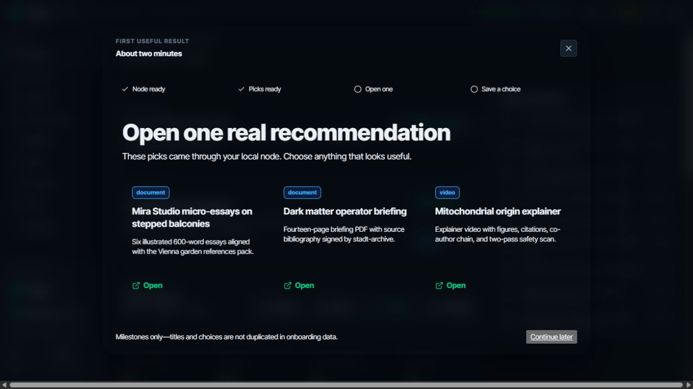
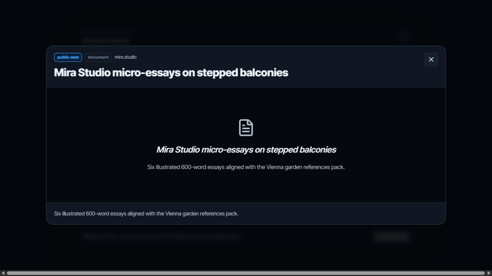

DEV-01 · 首次启动三分钟获得价值
本页只标注 UI 改造点；截图来自本地 fixture 验收，不包含真实用户内容或路径。

1
2
3
1
用真实 node 里程碑显示进度；未完成步骤不伪装成成功。
2
首屏直接给出三条可打开的真实推荐，不要求账号、模型或 Peer。
3
明确“只存里程碑”的隐私边界，并允许稍后继续。
状态 A：内容已就绪，用户只需选择一项。

1
2
1
复用现有 ContentViewer 打开选中内容，而不是用“下一步”按钮伪造完成。
2
打开动作通过 `/api/local/consumption` 写入，前端随后重新读取聚合状态。
状态 B：真实内容已打开，`first_item_opened` 由 node 判定。
1
2
1
打开与偏好两项都完成后才显示成功；重启后由本地状态恢复。
2
下一步导向“更多推荐”或可选本地 AI，不阻断基础内容能力。
状态 C：保存本地偏好，首次价值闭环完成。